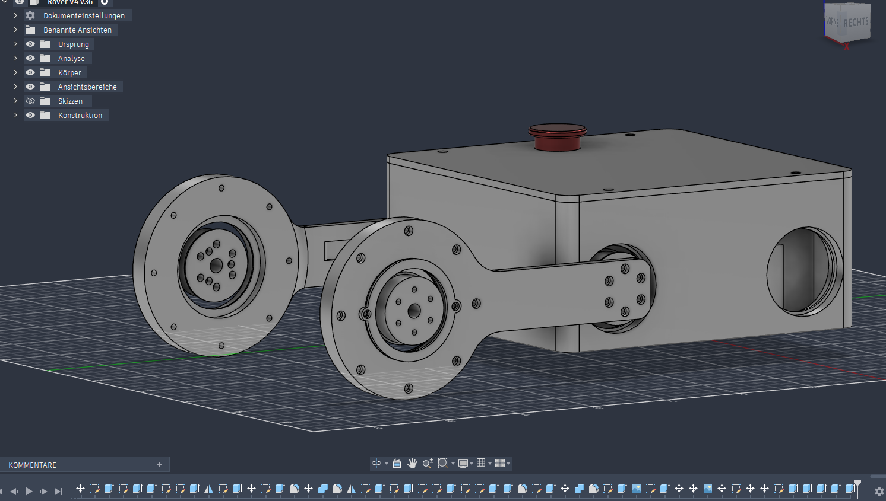
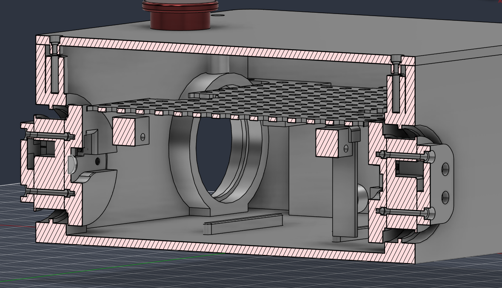
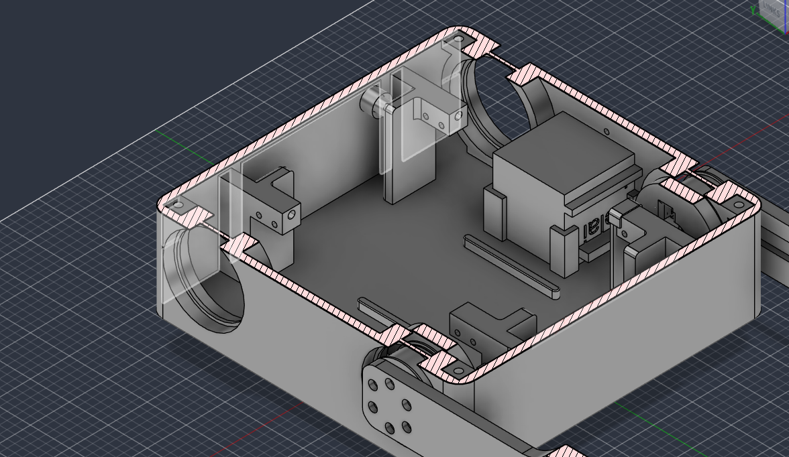
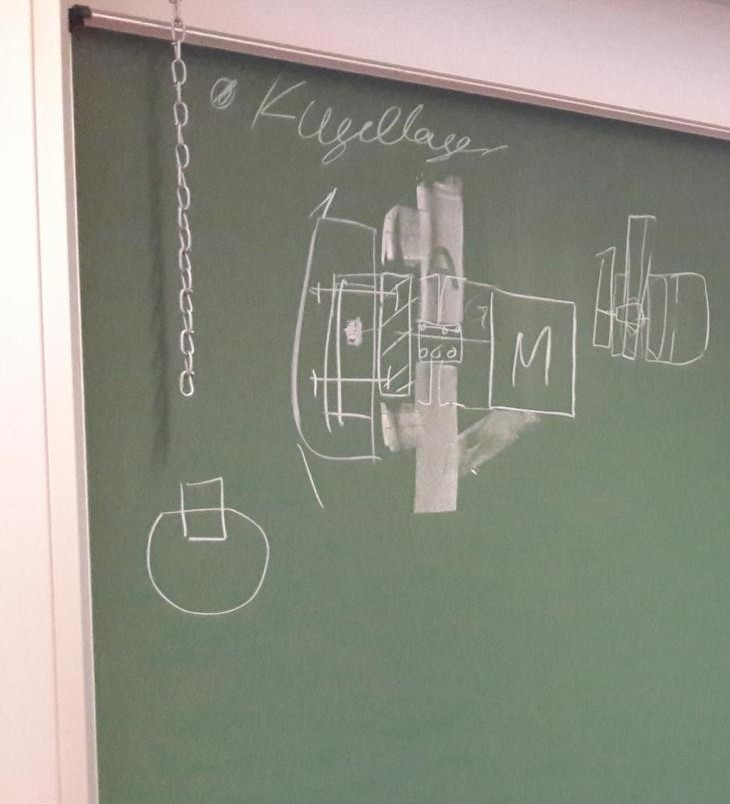
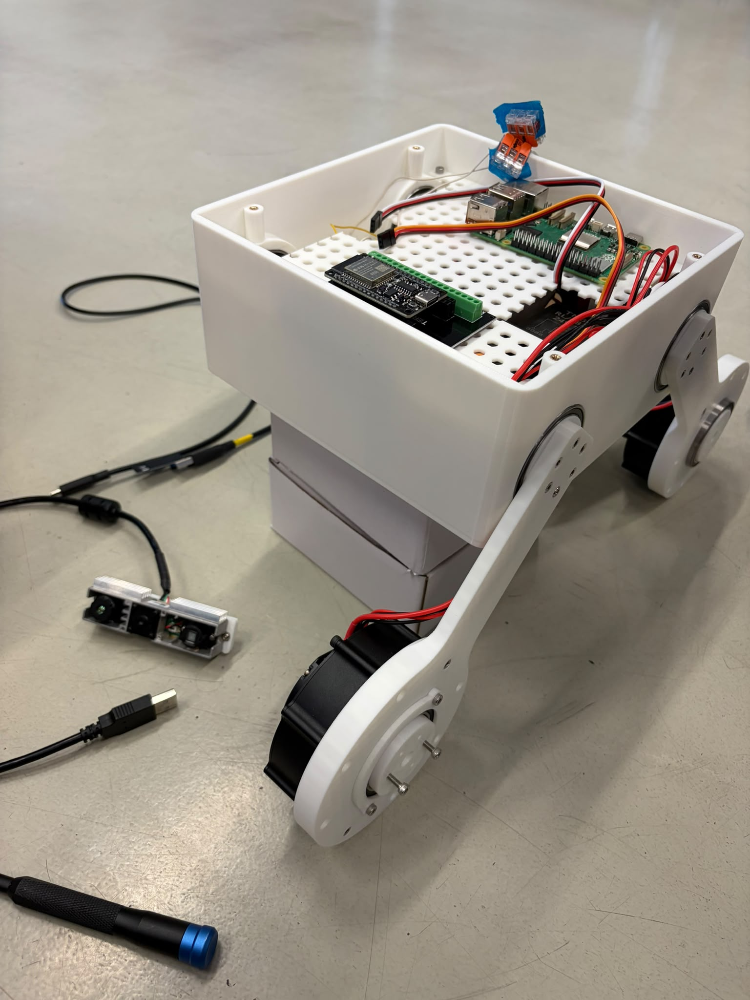
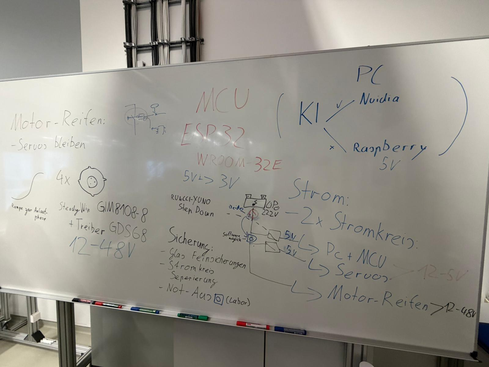
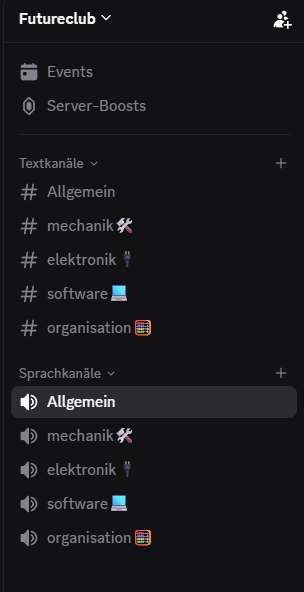

Future Club
Rover.
Seit der Oberstufe arbeite ich im Future Club THI an der Entwicklung eines mobilen Rovers. Der aktuelle Schwerpunkt liegt auf der mechanischen Weiterentwicklung, der strukturierten Einteilung der Komponenten und der Umsetzung des bereits ausgearbeiteten Elektronikkonzepts.

Der Rover wird im Future Club THI kontinuierlich weiterentwickelt. Mechanik und Elektronikkonzept sind bereits weit ausgearbeitet; der nächste Meilenstein ist die Steuerung des Rovers über einen ESP32-Controller.
Vier unabhängig ansteuerbare Achsen mit eigener Lager- und Kabelführung.
Ein Schwerpunkt der bisherigen Arbeit lag auf der mechanischen Weiterentwicklung der vier Achsarme. Die einzelnen Achsen werden durch speziell ausgelegte Bauteile zusammengehalten: Zwei kreisförmige Platten werden miteinander verspannt und bilden die mechanische Aufnahme, während die Achse über ein Kugellager gelagert wird.
Die Arme verfügen außerdem über integrierte Kabelkanäle, sodass die Leitungen innerhalb der Konstruktion geführt werden können. Die CAD-Ansichten zeigen sowohl die Gesamtstruktur als auch den mechanischen Aufbau im Detail; die Tafel-Skizze ergänzt die zugrunde liegenden Konstruktionsüberlegungen.



Der Rover wurde auch hinsichtlich seiner inneren Komponenten strukturiert aufgebaut.
Neben den vier Achsarmen wurde die Einteilung der einzelnen Komponenten geplant. Dazu gehört ein eigenes Batteriefach, das geöffnet und geschlossen werden kann. Die Anordnung schafft eine klare Trennung der Baugruppen und erleichtert den späteren Aufbau, die Wartung und die Erweiterung des Systems.

Das elektronische Gesamtkonzept ist bereits ausgearbeitet.
Die elektronische Architektur des Rovers wurde vollständig konzipiert. Alle Komponenten besitzen einen festen Platz im System, sodass die Einteilung klar strukturiert bleibt. Zusätzlich ist die Versorgung in zwei Stromkreisläufe aufgeteilt: einen für die Motoren und einen separaten Bereich für die Feinelektronik und Steuerung.
Die weiße Tafel zeigt die erarbeitete Systemübersicht und bildet die Grundlage für die spätere praktische Umsetzung.

Systemarchitektur
Alle Teile besitzen einen festen Platz. Die Trennung von Motorversorgung und Feinelektronik bildet die Grundlage für einen robusten weiteren Aufbau.
Die Softwareentwicklung startet mit der manuellen Rover-Steuerung.
Mit der Programmierung befinden wir uns aktuell noch am Anfang. Für den nächsten Schritt wird ein weiterer Motor benötigt, um die Steuerung praktisch erproben zu können. Der nächste Meilenstein ist deshalb die Steuerung des Rovers über einen Controller mit einem ESP32.
Perspektivisch soll der Raspberry Pi 5 die übergeordnete Rechenplattform bilden und anschließend auch ROS-basierte Operationen ermöglichen.
Technische Entwicklung funktioniert nur mit guter Abstimmung im Team.
Parallel zur technischen Arbeit spielt die Organisation im Team eine wichtige Rolle. Für die Abstimmung nutzen wir unter anderem Discord- und WhatsApp-Kanäle, um Aufgaben, Fortschritte und nächste Entwicklungsschritte strukturiert zu koordinieren.
Dadurch werden nicht nur technische Inhalte aufgeteilt, sondern auch Teamleitungs- und Kommunikationsfähigkeiten sichtbar, die für ein laufendes Robotikprojekt entscheidend sind.

Vom mechanischen Konzept zum vollständigen Robotersystem.
Der Future Club Rover verbindet mechanische Konstruktion, Elektronik, Teamarbeit und zukünftige Softwareentwicklung in einem laufenden Systemprojekt. Besonders wichtig ist dabei die schrittweise Entwicklung: erst die mechanische Basis, dann die Elektronik und anschließend die manuelle Steuerung über einen Controller sowie spätere ROS-basierte Erweiterungen.